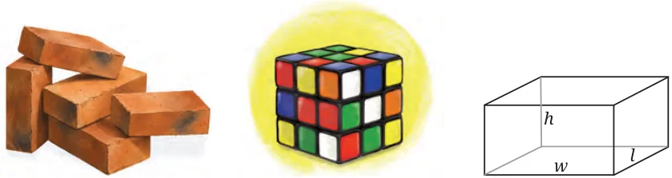
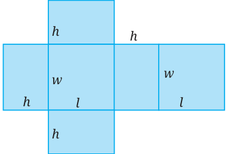
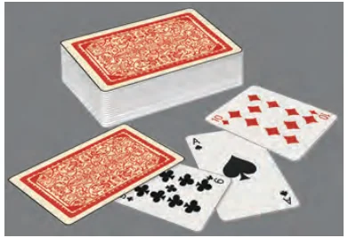
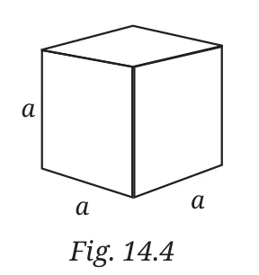

A cuboid has the shape shown in these pictures. A useful way of thinking about a cuboid is that it is a ‘three-dimensional (3D) version’ of a rectangle.
It has six faces, all rectangles. It is characterised by three quantities: length, width, and height — these are denoted by \(l, w, h\) respectively.

You can cut out the net of a cuboid given at the end of the textbook, make appropriate folds and join the edges to form the cuboid.
What is the total surface area of a cuboid? You may refer to the net of the cuboid given in Fig. 14.2.
Considering the faces individually, we see that the total surface area (TSA) of the cuboid is
\(\text{TSA} = 2(wl + hl + hw).\)
Volume measures the amount of three-dimensional space an object or a container occupies. It is measured in cubic units, e.g., cubic meters (\(m^{3}\)) or cubic centimeters (\(cm^{3}\)). We set the volume of a unit cube (i.e., a cuboid measuring one unit in each direction) to be one cubic unit (e.g., \(1\ \text{m}^{3}\) or \(1\ \text{cm}^{3}\), as the case may be). The volume of a general cuboid is the number of unit cubes that fit into it. Accordingly, the formula for the volume \(V\) of a cuboid is length \(\times\) width \(\times\) height or
\(V = lwh.\)

Compare the formula for the volume of a cuboid with the formula for the area of a rectangle (length \(\times\) width).
Here is a way of understanding why the formula \(V = lwh\) is true: think of a cuboid as a large number of thin rectangular pieces (length \(l\), width \(w\)) stacked on top of each other, like a pack of playing cards. (Fig. 14.3).
Think and Reflect
Try to work out for yourself why this model explains the formula for the volume of a cuboid, i.e.,
\(\text{volume} = \text{area of base} \times \text{height}.\)
Write the formula for the surface area and the volume of a cube.

A particular and important case of a cuboid is a cube, whose length, width, and height are the same. This length is the ‘side’ of the cube.
Let the side be \(a\). Then:
- Total surface area of the cube is \(6a^{2}\).
- Volume of the cube is \(a^{3}\).
Observe how these two formulas are special cases of the formulas \(2(wl + hl + hw)\) and \(whl\), when \(w = h = l\).
Do you remember cube numbers? Cube numbers are the numbers in the sequence 1, 8, 27, 64, … . These numbers represent the number of unit cubes that can fit inside cubes of side lengths 1, 2, 3, 4, … respectively — in other words, they represent the volumes of these cubes. We know that \(1^{3} = 1\), \(2^{3} = 8\), \(3^{3} = 27\), \(4^{3} = 64\), …; and \(\sqrt[3]{1} = 1\), \(\sqrt[3]{8} = 2\), \(\sqrt[3]{27} = 3\), \(\sqrt[3]{64} = 4\), and so on.
Example 1: Two solid objects are made from the same material: Cube A has side 6 cm and Cuboid B has dimensions 9 cm \(\times\) 6 cm \(\times\) 4 cm. Compare their volumes and surface areas and determine which object has a greater surface area. How is this useful in a real-life situation?
For Cube A, side (\(a\)) = 6 cm.
Hence its volume is \(a^{3} = (6\ \text{cm})^{3} = 216\ \text{cm}^{3}\) and surface area (SA) is \(6a^{2} = 6 \times (6\ \text{cm})^{2} = 216\ \text{cm}^{2}\).
For Cuboid B, length (\(l\)) = 9 cm; width (\(w\)) = 6 cm; height (\(h\)) = 4 cm.
Hence its volume is \(l \times w \times h = 9 \times 6 \times 4 = 216\ \text{cm}^{3}\)
and surface area (SA) is \(2(lw + wh + lh) = 2[(9 \times 6) + (6 \times 4) + (4 \times 9)] = 228\ \text{cm}^{2}\).
Thus, the two objects have the same volume but different surface areas. The cuboid has greater surface area than the cube.
Conclusion: For the same storage capacity: a cube requires less covering material; a cuboid exposes more area to its surroundings.
This concept is important in packaging, heat transfer and engineering.